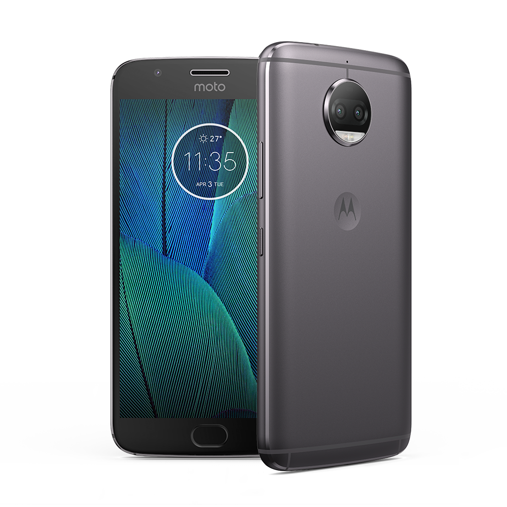
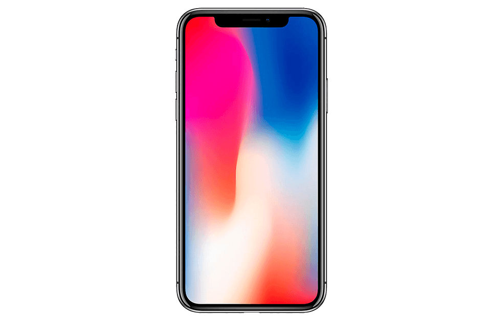

Samsung Galaxy S8 Plus
Las dimensiones del Samsung Galaxy S8 Plus son: 73.4 mm de ancho, 159.5 mm de alto y 8.1 mm de grosor en su perfil, mientras que su peso es de 173 g. El móvil destaca por su diseño sin marcos alrededor de la pantalla y la eliminación del botón Home físico. Es un smartphone unibody fabricado en aluminio de alta calidad recubierto por una capa de cristal con protección Corning Gorilla Glass 5 tanto en la parte frontal como en la trasera contra pequeños golpes, caídas y arañazos. Además el nuevo S8 Plus cuenta certificación IP68, es decir, es resistente al agua hasta 1 metro de profundidad durante un máximo de 30 minutos y también dispone de protección frente al polvo, la suciedad y la arena.

Tiene un tamaño de pantalla de 6.2 pulgadas, con una resolución de 2960x1440 píxeles. La pantalla es de tipo Super AMOLED y tiene una densidad de píxeles de 529 ppp. La pantalla tiene un formato más panorámico para ver series y películas, con un ratio de 18,5:9. Además, la pantalla del Galaxy S8+ incorpora tecnología HDR.
Moto G5S Plus
Las dimensiones del Moto G5S Plus son: 74 mm de ancho, 150,2 mm de alto y 7,9 mm de grosor en su perfil, mientras que su peso es de 155 g. cuenta con una pantalla IPS de 5,5", con resolución 1920x1080. Alcanza una densidad de píxeles de 424 ppp. Además, cuenta con protección Corning Gorilla Glass 3 contra arañazos y golpes.
El Moto G5S Plus corre la versión 8.0 de Android y trabaja con un cpu Qualcomm Snapdragon 625 de 1 núcleos que alcanza una velocidad de reloj de 2 GHz. Más características técnicas: en el apartado de memoria, contamos con 3 GB de memoria RAM y 32 GB para almacenamiento de archivos, apps y datos. La memoria de almacenamiento se puede ampliar vía microSD.La cámara principal, o trasera, del G5 Plus tiene una resolución de 12 MP. Cuenta además con Flash LED Dual. En cuanto a vídeo, es capaz de grabar a resolución UHD 4K MP. En cuanto a la cámara frontal, para selfies o videoconferencia, la resolución es de 5 MP.
La batería no es extraíble, por lo que no puedes reemplazarla si se desgasta o estropea. La capacidad de la batería del es de 3000 mAh. En cuanto a conectividad, y además de las especificaciones técnicas que tienes a la izquierda, podemos contarte que el Moto G5 Plus utiliza una tarjeta microsim. Es además Dual SIM, por lo que puedes utilizar dos tarjetas al mismo tiempo. Este Moto G5 Plus es compatible con las redes 3G. Este Moto G5 Plus es compatible con las redes 4G. Cuenta también con conexión NFC.
iPhone X
El Apple iPhone X monta una pantalla de 5,8 pulgadas con resolución 2.436x1.125px. Es un panel OLED, la primera vez que Apple apuesta por esta tecnología y ofrece un nivel de negros óptimo y buena calibración de color. Este panel tiene una densidad de pixeles de 458ppp.
El Apple iPhone X trabaja sobre el procesador Apple A11 Bionic y 3 GB de memoria RAM. Es un procesador muy potente con una GPU personalizada de Apple que rinde notablemente más que el Apple A10 de los iPhone 7. En cuanto a almacenamiento, el iPhone X parte de 64 GB y es almacenamiento no ampliable.
La cámara principal del iPhone X tiene un pack de doble sensor de 12 Mpx perfecto para modo retrato ya que uno de los objetivos es telefoto 2X. Cuenta además con Flash True Tone con cuatro LED. En cuanto a vídeo, es capaz de grabar a resolución UHD 4k 60 fps. En cuanto a la cámara frontal, para selfies o videoconferencia, la resolución es de 7 MP.